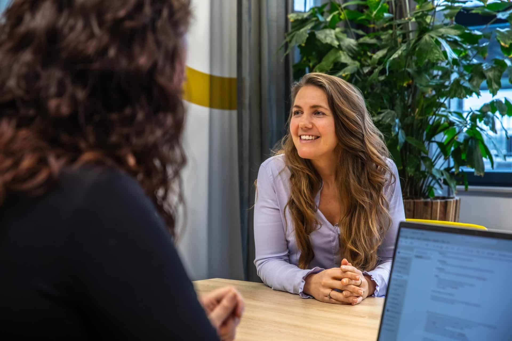
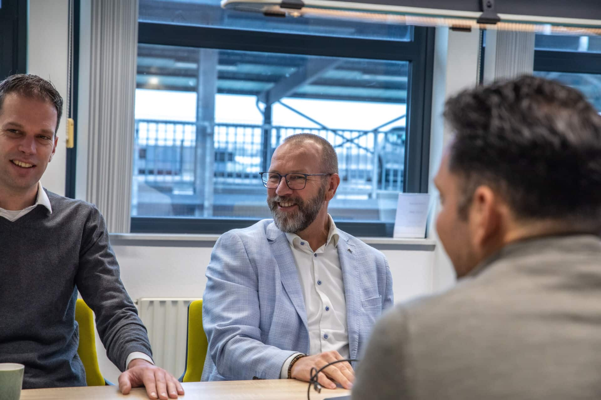

Vacature
Senior Functioneel Beheer Consultant | Microsoft Dynamics 365 Business Central (NAV) / 4PS Construct
DIS Group is per direct op zoek naar een senior functioneel beheerder
Over DIS Group
DIS Group is een onafhankelijke Microsoft Dynamics 365 Business Central (NAV) / 4PS Construct specialist. DIS richt zich volledig op het begeleiden van implementaties en het optimaliseren van bedrijfsprocessen. Wij hebben een focus op bedrijven in de bouw, GWW / Infra en Installatie.
Over de functie
Als senior functioneel beheer consultant ben je dé inhoudelijke expert voor onze klanten. Je lost complexe vraagstukken op, adviseert op strategisch niveau en speelt een sleutelrol in procesoptimalisaties. Daarnaast coach en begeleid je medior en junior collega’s.
Je bouwt langdurige klantrelaties op en bent in staat om zowel functioneel, procesmatig als adviserend het verschil te maken.

De werkzaamheden bestaan onder andere uit:
- Prioriteren en verrijken van meldingen;
- Het oplossen van meldingen vanuit Topdesk;
- Ondersteuning bieden aan Microsoft Dynamics 365 Business Central (NAV) / 4PS Construct gebruikers die vragen hebben;
- Analyseren van de oorzaak van een melding en de melding waar mogelijk direct oplossen;
- Actief benaderen van klanten voor de terugkoppeling op acties en een check op tevredenheid met betrekking tot de afhandeling van meldingen;
- Zorgen voor het doorvoeren van een geaccordeerde wijziging.
In het kort
Wat verwachten we?
- HBO werk- en denkniveau met een passende opleiding;
- Bereid tot het volgen van trainingen en interne opleiding;
- Kennis op het gebied van Microsoft Dynamics 365 Business Central (NAV) of 4PS Construct is een pré;
- Kennis van bedrijfsprocessen in de bouwnijverheid is een pré;
- Uitstekende communicatieve vaardigheden, klantgericht, flexibel in houding en beschikbaarheid;
- Goede beheersing van de Nederlandse en Engelse taal.
Aanbod
Naast een afwisselend en uitdagende baan bij een groeiende organisatie, bieden wij jou:
- Salaris waar je blij van wordt, uiteraard met vakantiegeld;
- 30 vrije dagen;
- Goede secundaire arbeidsvoorwaarden;
- Ruimte voor eigen initiatieven en ideeën;
- Mogelijkheid voor opleiding en cursussen.
Interesse?
Heb je interesse in deze functie, stuur dan je reactie met CV naar Rianne van de Bovenkamp-Kruithof via onderstaande button. Voor meer informatie over deze vacature kun je contact opnemen met Rianne
Stuur je CV naar Rianne

Alle vacatures

32-40 uur
Vianen
Junior / Medior AI Developer
Als AI Developer werk je aan het ontwikkelen van AI-oplossingen en AI Agents voor onze klanten.
Bekijk de vacature

32-40 uur
Vianen
Medior / Senior Power BI Consultant
Als Power BI Consultant vertaal je data naar heldere dashboards en stuurinformatie die klanten direct helpt betere beslissingen te nemen.
Bekijk de vacature

32-40 uur
Vianen
Medior / Senior Technisch Consultant
Als developer werk je aan slimme maatwerkoplossingen in Business Central voor uiteenlopende klanten en projecten.
Bekijk de vacature

32-40 uur
Vianen
Senior Functioneel Beheer Consultant
Als senior functioneel beheer consultant ben je dé inhoudelijke expert voor onze klanten.
Bekijk de vacature
Een kijkje in de keuken
Vanuit ons kantoor in Vianen werken wij in een hecht team, waar iedereen iets unieks bijdraagt aan het behalen van onze doelen. We hebben passie voor wat we doen en werken écht samen. Vol energie gaan we nieuwe uitdagingen aan en leiden ze in goede banen. Een project is voor ons pas geslaagd wanneer het maximale gelukt is. Wil jij kijken hoe wij dit doen?
Neem contact op

Het sollicitatieproces
1. Jouw sollicitatie
Je stuurt ons je CV (en eventueel een korte motivatie). Wij laten snel van ons horen, vaak al binnen een paar dagen.
2. De kennismaking
We plannen een informeel gesprek om elkaar beter te leren kennen. Jij hoort alles over DIS en wij zijn benieuwd naar jouw verhaal.
3. Tweede gesprek
We duiken iets dieper in je ervaring en skills. Soms schuift een collega aan of bespreken we een voorbeeldproject.
4. Jouw contract
Is er een match? Dan doen we je een passend aanbod en maken we alles in orde. Snel, helder en zonder gedoe.
5. Knallen
Welkom bij DIS! We zorgen voor een goede start, duidelijke verwachtingen en projecten waar je energie van krijgt.